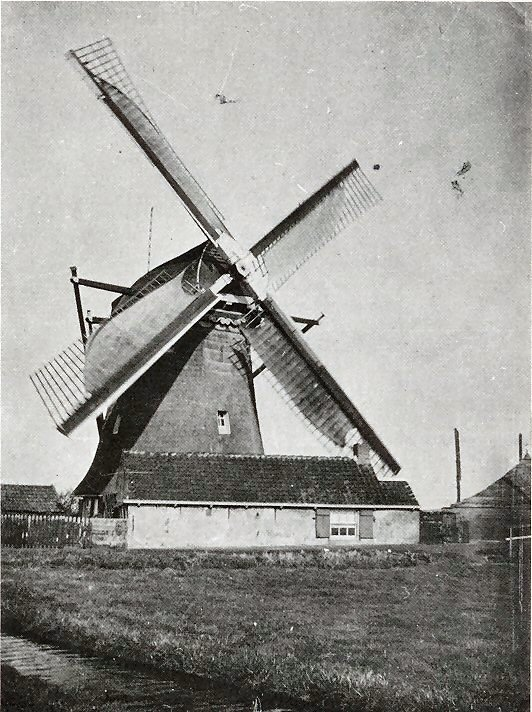
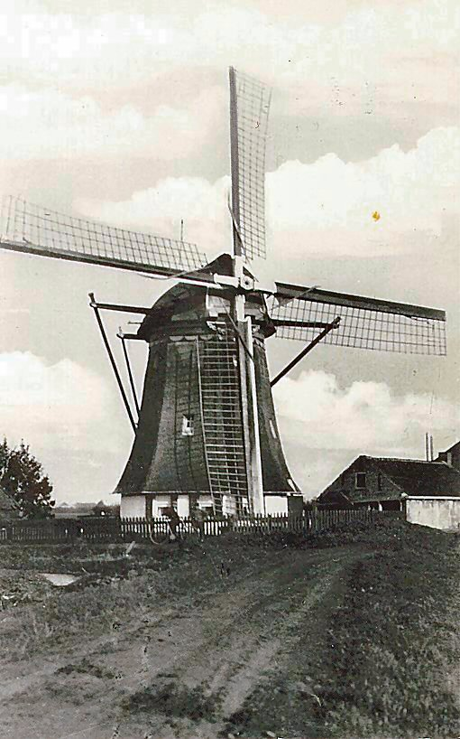
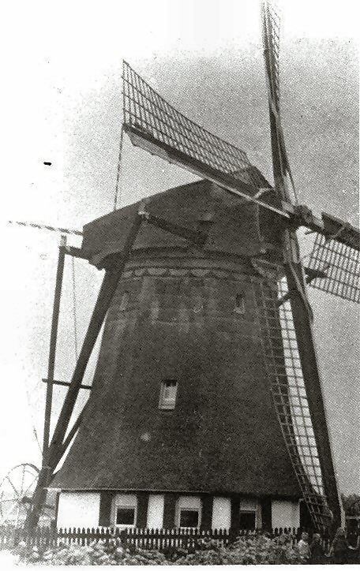

Naaldwijk verdwenen molens

 Korenmolen de Ster gesloopt 1921 |
 Korenmolen de Ster 2 |
 Korenmolen de Ster 3 |
 Korenmolen de Ster 4 |
 Korenmolen de Ster 5 |
 Korenmolen de Ster 6 |
 De Ster. |
 Op de achtergrond de Ster. |
 De Ster. |
 De Ster. |
 De Ster. 1910 afkomstig uit de collectie van het Historisch Archief Westland. |
 De Ster. 1913 afkomstig uit de collectie van het Historisch Archief Westland. |
 De Ster. afkomstig uit de collectie van het Historisch Archief Westland. |
 |
|
 De Vlietmolen van de Vlietpolder, na brand herbouwd in 1793 en 1886, gesloopt in mei 1928. De molen was zeer breed opgehekt en had vier zoomlatten, vlucht 25,70 m. |
 De Vlietmolen 2 |
|
 de Vlietmolen 3 |
 Deze pagina is gemaakt op 25-12-2006: Tijd: 20:40 uur.
Deze pagina is gemaakt op 25-12-2006: Tijd: 20:40 uur.

Laatste wijziging:23-8-2012. Tijd: 21:58 uur.
Met dank aan: de
Hollandsche molen/Rob Pols/Hans Klok/Gerard Barendse/
Erwin Esselink/Teun van der Sloot/voor het gebruik van de foto's